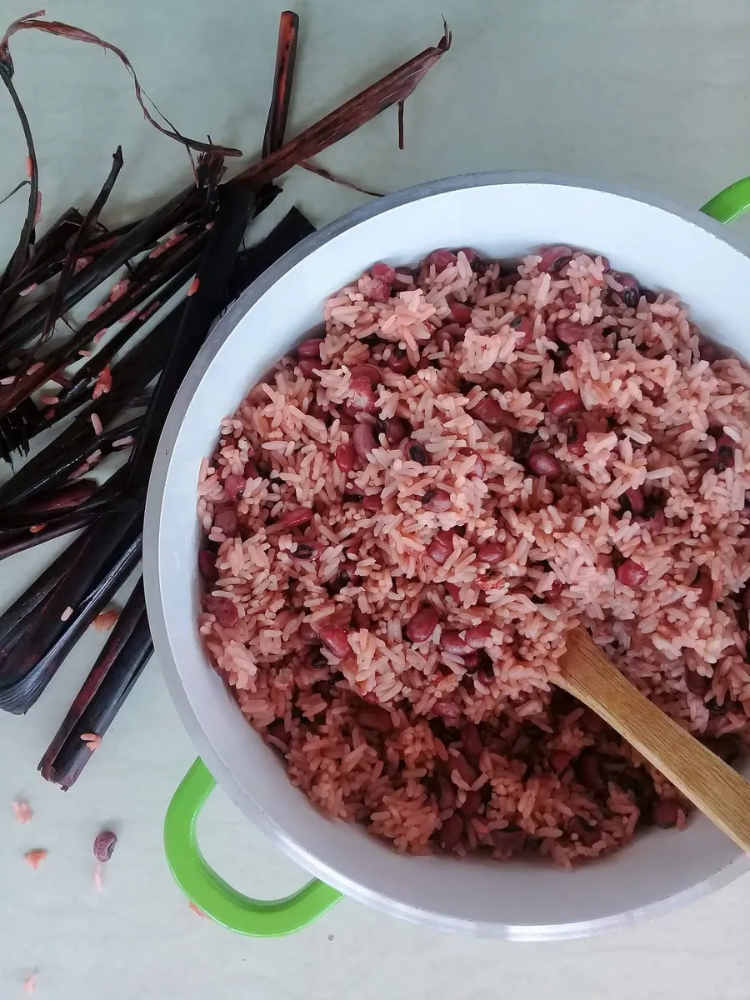

Waakye Recipe
Home

Description
Waakye is a popular Ghanaian dish made from rice and beans, often served with a variety of sides such as boiled eggs, fried plantains, spaghetti, gari, and shito (spicy sauce).
Ingredients
- 2 cups rice
- 1 cup black-eyed peas or red beans
- 1-2 dried millet leaves (optional, for color)
- Water
- Salt to taste
Instructions
- Soak the beans in water for a few hours or overnight for faster cooking.
- Rinse the beans and place them in a pot. Add enough water to cover and cook until they begin to soften (about 20-30 minutes).
- If using millet leaves, add them to the pot for the traditional waakye color.
- Rinse the rice and add it to the beans. Add more water if needed to cook both rice and beans together.
- Add salt to taste. Stir occasionally and cook until both rice and beans are soft and water is absorbed (about 20-30 minutes).
- Remove millet leaves before serving.
- Serve hot with your choice of sides: boiled eggs, fried plantains, spaghetti, gari, shito, salad, or meat/fish.
Gallery